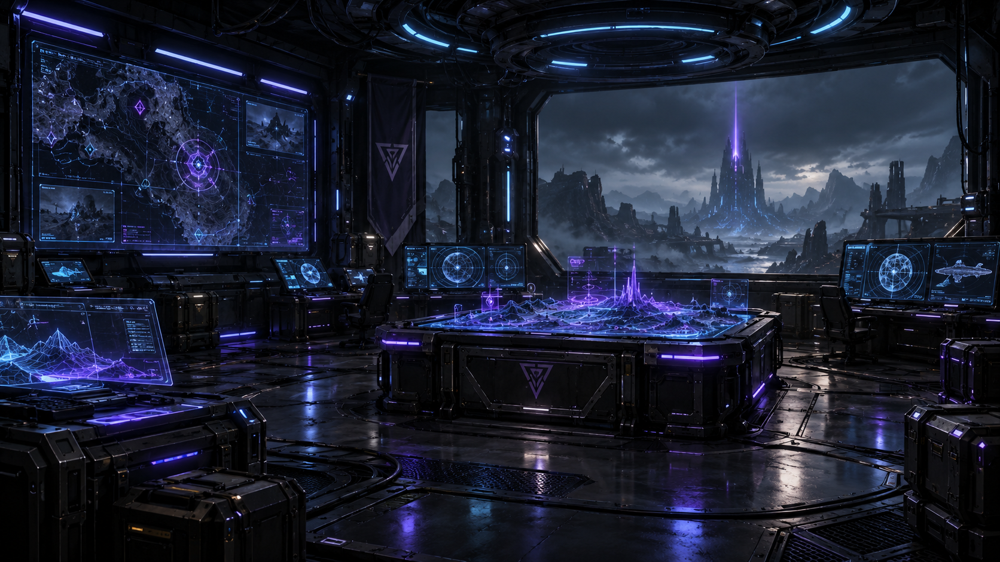
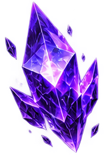
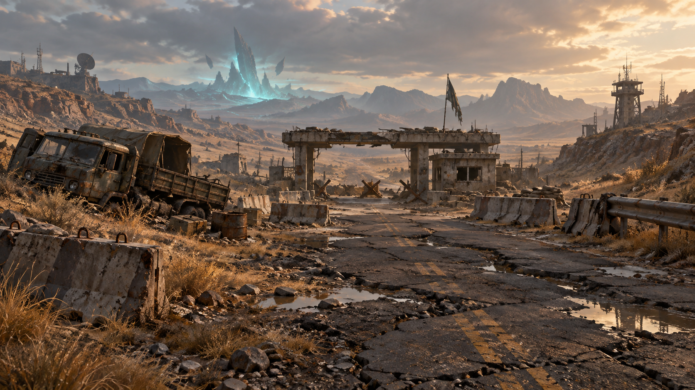
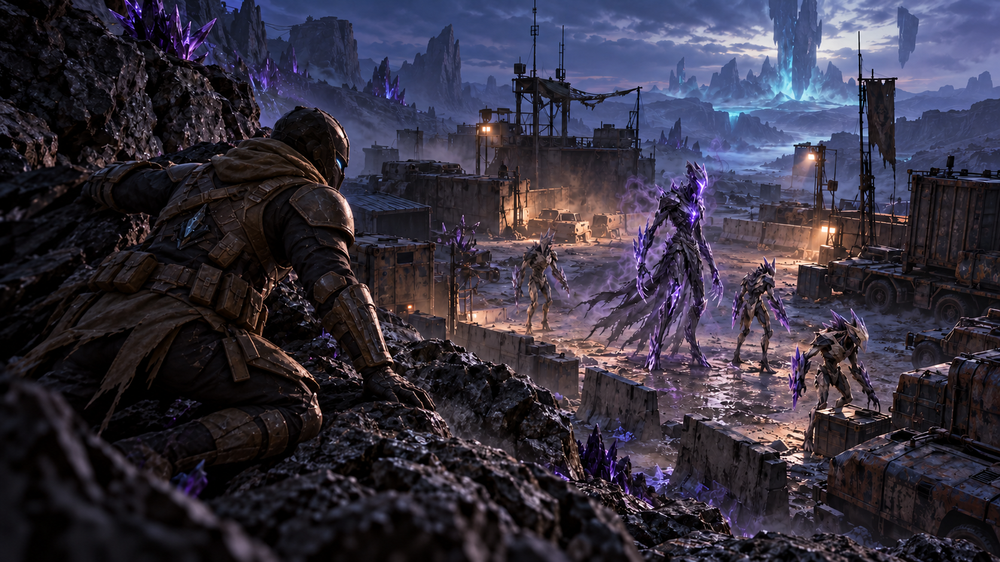

Подготовься
Оружие, броня, рюкзак и артефакты. Реши, что взять с собой и сколько места оставить под добычу.
ANDROID · ЗАКРЫТОЕ ТЕСТИРОВАНИЕ
Собери снаряжение. Войди в разлом. Найди то, ради чего стоит вернуться.
01 / ЦИКЛ РЕЙДА
Оружие, броня, рюкзак и артефакты. Реши, что взять с собой и сколько места оставить под добычу.
Исследуй локацию, ищи ценные предметы и выбирай свои сражения. Время рейда ограничено.
Найди доступный выход и доставь добычу на базу. Улучши снаряжение перед следующим рейдом.

02 / АРСЕНАЛ СКИТАЛЬЦА
Артефакты, оружие и снаряжение из игрового каталога.

RIFT TECHNOLOGY / FIELD ARCHIVEДанные текущей версии проекта. Баланс может измениться к выпуску.

03 / АТЛАС РАЗЛОМА
КОНЦЕПТ-АРТ · Облик локации в игре может отличаться
04 / ПО ТУ СТОРОНУ УКРЫТИЯ
Четыре истории одного мира. Выбери сцену и рассмотри её целиком.

КОНЦЕПТ-АРТ ПО ОРИГИНАЛЬНЫМ РЕФЕРЕНСАМ ВРАГОВ · Художественные сцены, не кадры игрового процесса.
05 / СИГНАЛ С БАЗЫ
RivenShifters готовится к выпуску. Сейчас мы работаем над стабильностью, удобством управления и балансом рейдов. Публичная загрузка пока недоступна.
СВЯЗАТЬСЯ С РАЗРАБОТЧИКОМ ↗06 / НА СВЯЗИ
Вопросы об игре, ошибки, восстановление доступа и работа с данными аккаунта.
НАПИСАТЬ В ПОДДЕРЖКУ ↗Sublustrum123@gmail.com
Если вам нравится проект, вы можете поддержать его развитие. Сумму выбираете вы на странице PayPal.
ПОДДЕРЖАТЬ ЧЕРЕЗ PAYPAL ↗Откроется внешний сайт PayPal. Поддержка добровольная и не выдаёт автоматически предметы, валюту или достижения в игре. Платёжные данные вводятся только в PayPal.
Игра находится на этапе закрытого тестирования Android. Информацию о публичном выпуске добавим позже.
На этой версии сайта представлены концепт-арт мира и изображения игровых предметов. Они передают художественное направление; это не запись игрового процесса.
Sublustrum123@gmail.com
Не отправляйте пароли и коды подтверждения. Информация об обработке данных и удалении аккаунта доступна на основном сайте.